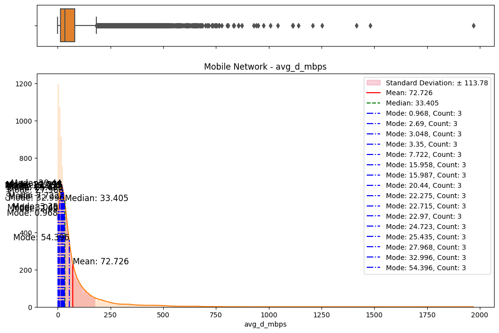
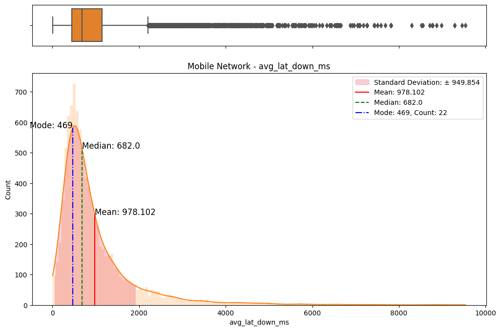
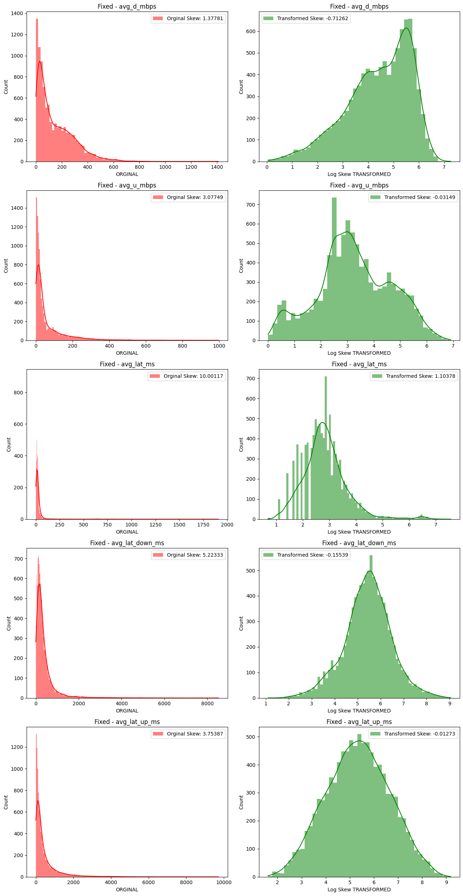

An exploratory data analysis on an Ookla speedtest dataset with applications of descriptive analytics, data transformations, hypothesis testing, and predictive modelling.
AI / ML
Author
Brandon Toews
Published
January 9, 2024
1 Description
In this section, we elaborate on the steps taken to clean the dataset obtained from ‘ookla_speed_q4_2022.csv’. The dataset, consisting of 20,000 entries and 7 features related to network performance, underwent a comprehensive cleaning process.
Upon loading the dataset using the pandas library in Python, we observed that it contained 20,000 entries with 7 columns. An initial assessment revealed the presence of missing values in the avg_lat_down_ms and avg_lat_up_ms columns. (Fig. 1)
Code
# Create a deep copy of the dataframe for cleaningcleaning_df = df.copy()# Not many rows with missing values as shown in plotcleaning_df.isna().sum().plot(kind='bar', ylim=(0, cleaning_df.shape[0]))# Drop rows with missing valuescleaning_df.dropna(inplace =True)
Figure 1. Bar plot of missing values in each column
Dropping Rows with Missing Values: Rows containing missing values were dropped to ensure the reliability of our subsequent analyses. (Fig. 1)
Column Removal: We removed the unnecessary Unnamed: 0 column, as it served as an unnamed index and did not contribute to the analysis.
Spelling Corrections and Categorization: We addressed spelling errors in the net_type column, changing ‘moblie’ to ‘Mobile’ and capitalizing ‘fixed’. The net_type column was then converted to a categorical data type.
Duplicate Entry Removal: Duplicate entries were identified and subsequently dropped to ensure the uniqueness of our data.
Conversion of Float Columns to Int: We verified the avg_lat_down_ms and avg_lat_up_ms columns for floating-point values and converted them to integers if necessary.
1.3 Column Renaming and Unit Conversion
To enhance clarity, we renamed columns related to average download and upload speeds and converted the corresponding values from kilobits per second to megabits per second.
1.4 Resulting Dataset
The resulting cleaned dataset, now saved as ‘cleaned_dataset.parquet’, comprises 19,030 entries and 6 columns, each with non-null values. The net_type column is categorized into ‘Mobile’ and ‘Fixed’. The dataset is now ready for further analysis and modeling.
2 Comprehensive Data Analysis
In this section, we delve into the exploratory data analysis (EDA) process, aiming to comprehend the underlying distributions, compare fixed and mobile network data, and identify any notable correlations. Recognizing that the initial data exhibited heavily positively skewed distributions, we undertook a series of data transformations to bring the distributions closer to normality. The primary objective was to enhance the suitability of the data for subsequent hypothesis testing.
The initial step involved an examination of the distributions of both fixed and mobile network data. Histograms, box plots (Fig. 2), and summary statistics (Figs. 3 & 4) were employed to gain insights into the central tendencies, dispersions, and skewness of the datasets. Notably, the distributions were observed to be heavily positively skewed, prompting the need for transformation to meet the assumptions of parametric statistical tests.
(a) Box/Hist plots of avg_d_mbps
(b) Box/Hist plots of avg_u_mbps
(c) Box/Hist plots of avg_lat_ms
(d) Box/Hist plots of avg_lat_down_ms
(e) Box/Hist plots of avg_lat_up_ms
Figure 2. Box and histogram plots
Figure 3. Summary statistics of each network type
(a) avg_d_mbps column
(b) avg_u_mbps column
(c) avg_lat_ms column
(d) avg_lat_up_ms column
(e) avg_lat_down_ms column
Figure 4. Skew and kurtosis values for everything and each network type
2.2 Comparative Analysis
To assess the disparities between fixed and mobile networks, we conducted thorough comparative analyses. Kernel density plots (Fig. 5) and statistical tests (Fig. 3) were leveraged to highlight variations in central tendencies. These comparisons served as a foundation for subsequent transformations and allowed us to pinpoint differences between the two networks.
(a) avg_d_mbps for fixed network

avg_d_mbps for mobile network
avg_u_mbps for fixed network
avg_u_mbps for mobile network
(b) avg_lat_ms for fixed network
(c) avg_lat_ms for mobile network
(d) avg_lat_down_ms for fixed network

(e) avg_lat_down_ms for mobile network
(f) avg_lat_up_ms for fixed network
(g) avg_lat_up_ms for mobile network
Figure 5. KDE plots
2.3 Data Transformations
Several data transformations were applied, including but not limited to logarithmic, Box-Cox, and Yeo-Johnson transformations. Each transformation was carefully chosen based on its appropriateness for the given context and the nature of the initial distributions. Log transformations, for instance, are effective in addressing exponential growth patterns, while Box-Cox transformations are versatile in handling skewed data. (Lee, S. X. and McLachlan, G. J., 2022) (West, R. M., 2022)
2.4 Comparative Assessment of Transformations
A meticulous examination of the transformed datasets ensued, involving comparative analyses with the original data. Visualizations (Figs. 6) and statistical measures, including skewness and kurtosis tests (Fig. 8), were employed to quantify the improvements brought about by each transformation. The Yeo-Johnson transformation consistently demonstrated superior results in terms of bringing the data closer to a normal distribution. (Fig. 7)
Code
# Define a list of colors for the transformationstrans_colors = ['y', 'g', 'c', 'm']# Define a dictionary that maps transformation names to transformation functionstrans_funcs = {'Sqrt Skew': np.sqrt, # Square root transformation'Log Skew': np.log1p, # Logarithmic transformation'Box-Cox Skew': stats.boxcox, # Box-Cox transformation'Yeo-J Skew': stats.yeojohnson # Yeo-Johnson transformation}# Loop over each transformation in the 'trans_funcs' dictionaryfor transform in trans_funcs:# Loop over each key in the 'dfs' dictionaryfor key in dfs:# Get the number of columns in the dataframe corresponding to the current key num_cols =len(dfs[key][0].columns)# Create a subplot with 'num_cols' rows and 2 columns, and set the figure size fig, ax = plt.subplots(num_cols, 2, figsize=(13, 5*num_cols))# Loop over each column in the dataframe corresponding to the current keyfor i, col inenumerate(dfs[key][0]):# Apply the transformation to the columnif transform in ['Box-Cox Skew', 'Yeo-J Skew']:# For Box-Cox and Yeo-Johnson transformations, the function returns two values target, _ = trans_funcs[transform](dfs[key][0][col])else:# For other transformations, the function returns one value target = trans_funcs[transform](dfs[key][0][col])# Calculate the skewness of the transformed data transformed_skew = np.round(stats.skew(target),5)# Store the skewness in the 'trans_skews' dictionary trans_skews[col][key][transform] = transformed_skew# Plot a histogram of the original data sns.histplot(dfs[key][0][col], label='Orginal Skew: {0}'.format(trans_skews[col][key]['Org Skew']), color="r", ax=ax[i][0], kde=True, edgecolor=None) ax[i][0].legend() ax[i][0].set_xlabel('ORGINAL') ax[i][0].set_title(key+' - '+col)# Plot a histogram of the transformed data sns.histplot(target, label='Transformed Skew: {0}'.format(transformed_skew), color=trans_colors[trans_list.index(transform)-1], ax=ax[i][1], kde=True, edgecolor=None) ax[i][1].legend() ax[i][1].set_xlabel(transform +' TRANSFORMED') ax[i][1].set_title(key+' - '+col)# Adjust the padding between and around the subplots fig.tight_layout()# Display the figure plt.show()
(a) Original vs Sqrt transformed on fixed network
(b) Original vs Sqrt transformed on mobile network

(c) Original vs Log transformed on fixed network
(d) Original vs Log transformed on mobile network
(e) Original vs Box-Cox transformed on fixed network
(f) Original vs Box-Cox transformed on mobile network
(g) Original vs Yeo-Johnson transformed on fixed network
(h) Original vs Yeo-Johnson transformed on mobile network
Figure 6. Comparisons of data transformations on distributions
Figure 8. Comparison of original skew with data transformation skews on both networks
2.5 Correlation Analysis
In addition to distribution improvements, we investigated the impact of transformations on correlation structures within the data. Scatter plots (Figs. 9 & 10) and correlation matrices (Figs. 11 & 12) were employed to evaluate changes in relationships between variables. This step aimed to ensure that the transformations not only enhanced distributions but also preserved or revealed meaningful associations.
Code
# Create a pairplot of the dataframe 'df' sorted by 'net_type'g = sns.pairplot(df, hue='net_type', corner=True)# Set the title of the plot and adjust its positiong.fig.suptitle('Everything', y=1.02)# Display the plotplt.show()# Loop over each key in the dictionary of dataframes 'dfs'for key in dfs:# Create a pairplot each dataframe in the dictionary g = sns.pairplot(dfs[key][0], corner=True)# Set the title of the plot as the key and adjust its position g.fig.suptitle(key, y=1.02)# Display the plot plt.show()
# Loop over each key in the 'yeoj_dfs' dictionaryfor key in yeoj_dfs:# Create a pairplot of the dataframe corresponding to the current key# 'corner=True' means that only the lower triangle of the plot will be shown g = sns.pairplot(yeoj_dfs[key], corner=True)# Set the title of the figure, adding a small space above the title g.fig.suptitle(key+': Yeo-J Transformed', y=1.02)# Display the figure plt.show()
(a) Fixed network
(b) Mobile network
Figure 10. Pairplots on Yeo-Johnson transformed data
# Create a subplot with 1 row and 3 columns, sharing the y-axis, and set the figure sizefig, axes_mat = plt.subplots(1, 3, sharey=True, figsize=(10, 5))# Create a correlation matrix of all the numerical columnscorr = df.drop(columns='net_type').corr()# Visualize the correlation matrix with a heatmapsns.heatmap(corr, cmap='RdBu', vmin=-1, vmax=1, annot=True, square=True, ax=axes_mat[0], cbar=False)# Rotate and align labels on the x-axisaxes_mat[0].set_xticklabels(axes_mat[0].get_xticklabels(), rotation=45, horizontalalignment='right')axes_mat[0].set_title('Correlation Matrix for Everything')# Loop over each key in the dictionary 'dfs' and # the axes in 'axes_mat' starting from the second onefor key, ax inzip(dfs, axes_mat[1:]):# Create a correlation matrix of all the numerical columns corr = dfs[key][0].corr()# Visualize the correlation matrix with a heatmap sns.heatmap(corr, cmap='RdBu', vmin=-1, vmax=1, annot=True, square=True, ax=ax, cbar=False)# Rotate and align labels on the x-axis ax.set_xticklabels(ax.get_xticklabels(), rotation=45, horizontalalignment='right') ax.set_title('Correlation Matrix for '+key)# Create a colorbar for the whole figurenorm = Normalize(vmin=-1, vmax=1)# Create a ScalarMappable object with the 'RdBu' colormap and the normalizationsm = plt.cm.ScalarMappable(cmap='RdBu', norm=norm)# Set the array for the ScalarMappable to an empty arraysm.set_array([])# Add an axes to the figure for the colorbar at position [left, top, width, height]cbar_ax = fig.add_axes([0.15, 0.95, 0.7, 0.05]) # [left, top, width, height]# Add the colorbar to the figure with the ScalarMappable,# with horizontal orientation, and in the colorbar axesfig.colorbar(sm, orientation='horizontal', cax=cbar_ax)# Adjust the padding between and around the subplotsplt.tight_layout()# Display the figureplt.show()
Figure 11. Correlation heatmap matrices for both networks together and separately
# Create a subplot with 1 row and 2 columns, # sharing the y-axis, and set the figure sizefig, axes_mat = plt.subplots(1, 2, sharey=True, figsize=(10, 7))# Loop over each key in the 'yeoj_dfs' dictionary and the axes in 'axes_mat'for key, ax inzip(yeoj_dfs, axes_mat):# Create a correlation matrix of all the numerical columns corr = yeoj_dfs[key].corr()# Visualize the correlation matrix with a heatmap sns.heatmap(corr, cmap='RdBu', vmin=-1, vmax=1, annot=True, square=True, ax=ax, cbar=False)# Rotate and align labels on the x-axis ax.set_xticklabels(ax.get_xticklabels(), rotation=45, horizontalalignment='right') ax.set_title('Correlation Matrix for '+key)# Create a colorbar for the whole figurenorm = Normalize(vmin=-1, vmax=1)sm = plt.cm.ScalarMappable(cmap='RdBu', norm=norm)sm.set_array([])# Add an axes to the figure for the colorbar at position [left, top, width, height]cbar_ax = fig.add_axes([0.15, 0.95, 0.7, 0.05]) # [left, top, width, height]fig.colorbar(sm, orientation='horizontal', cax=cbar_ax)# Adjust the padding between and around the subplotsplt.tight_layout()# Display the figureplt.show()
Figure 12. Correlation heatmap matrices for both networks after Yeo-Johnson transformation
The described EDA and distribution transformations constitute a critical phase in preparing the data for hypothesis testing. The chosen transformations were justified through a systematic exploration of initial distributions, comparative analyses, and a thorough assessment of the impact on correlations. The Yeo-Johnson transformation demonstrated a remarkable ability to normalize skewed data, effectively mitigating the positive skewness observed in the initial distributions. This methodical approach ensures that subsequent analyses are conducted on data that aligns more closely with parametric assumptions, enhancing the robustness and reliability of the findings.
3 Hypothesis Definition and Testing
This section explores the variability and average download speed differences between fixed and mobile networks. Our goal is to determine if the standard deviation of avg_d_mbps varies significantly between the networks, providing insights into their consistency, and to establish whether one network has significantly higher average download speeds.
Hypothesis Definition and Testing Section Source Code
We employed a comprehensive set of statistical tests, considering the positively skewed nature of the original avg_d_mbps dataset.
3.1.1 Levene’s Test: Untransformed Data
Levene’s test was conducted on the untransformed avg_d_mbps data to assess whether the standard deviation of download speeds differs significantly between fixed and mobile networks.
Decision Justification: Levene’s test is robust for assessing equality of variances, and its non-parametric nature aligns well with the skewed distribution of the original data. (Yuhang Zhou, Yiyang Zhu and Weng Kee Wong, 2023) (Hosken, D. J., Buss, D. L. and Hodgson, D. J., 2018)
3.1.2 F-Test: Yeo-Johnson Transformed Data
An F-test was performed on Yeo-Johnson transformed data to compare variances between fixed and mobile networks after addressing the skewness.
Decision Justification: F-test is suitable for comparing variances, and using the transformed data allows us to make robust comparisons while accounting for skewness.
3.1.3 T-Tests: Untransformed and Yeo-Johnson Transformed Data
Independent sample t-tests were conducted on both untransformed and transformed avg_d_mbps data to assess whether one network has significantly higher average download speeds than the other.
Decision Justification: T-tests are appropriate for comparing means, and conducting them on both datasets ensures a comprehensive evaluation of average download speeds.
3.1.4 Mann-Whitney U Test: Untransformed Data
A non-parametric Mann-Whitney U test was performed on the untransformed data to corroborate findings from the t-tests and provide additional robustness.
Decision Justification: The non-parametric nature of the Mann-Whitney U test suits skewed data, offering an alternative perspective on average download speed differences. (Mori, M. et al., 2024) (María Teresa Politi, Juliana Carvalho Ferreira and Cecilia María Patino, 2021)
3.2 Results and Interpretation
3.2.1 Levene’s Test: Untransformed Data
F statistic: 1046.03, p-value: 0.0
Conclusion: The standard deviation of avg_d_mbps significantly differs between fixed and mobile networks.
3.2.2 F-Test: Yeo-Johnson Transformed Data
F statistic: 6.07, p-value: 0.0
Conclusion: The F-test on transformed data reinforces the conclusion that the standard deviation of avg_d_mbps varies significantly between networks. Also, it indicates that the fixed network has significantly higher average download speeds and a higher standard deviation than the mobile network.
3.2.3 T-Tests: Untransformed and Transformed Data
3.2.3.1 Untransformed Data:
t statistic: 40.16, p-value: 0.0
Conclusion: The fixed network has significantly higher average download speeds than the mobile network, and it also exhibits a higher standard deviation.
3.2.3.2 Yeo-Johnson Transformed Data:
t statistic: 120.57, p-value: 0.0
Conclusion: The transformed data supports the initial conclusion of the fixed network outperforming the mobile network in both average download speeds and standard deviation.
3.2.4 Mann-Whitney U Test: Untransformed Data
U statistic: 63199341.5, p-value: 0.0
Conclusion: The Mann-Whitney U test aligns with t-test results, indicating that the fixed network tends to have significantly higher average download speeds and a higher standard deviation.
3.3 Summary
Our multifaceted analysis, incorporating Levene’s test, F-test, t-tests on both original and transformed data, and the Mann-Whitney U test, consistently suggests that the fixed network exhibits significantly higher average download speeds compared to the mobile network. However, it’s important to note that this superior performance is accompanied by a higher standard deviation, indicating a greater degree of variability in download speeds. While the fixed network showcases higher speeds on average, the increased standard deviation suggests a higher level of variability, implying that the consistency of download speeds in the fixed network may be more variable than that of the mobile network. This thorough approach provides a nuanced understanding of the network performance, acknowledging the strengths and potential areas of variability.
Uni-variate and Multivariate linear regression models were employed to predict average download speed (avg_d_mbps). The initial models were trained on the original data, and the others were trained on Yeo-Johnson transformed data. The Yeo-Johnson transformed data exhibited a marginal improvement in performance, suggesting that addressing skewness contributed to better predictions (Pan, P., Li, R. and Zhang, Y., 2023). The mean absolute error (MAE), mean squared error (MSE), root mean squared error (RMSE), and R-squared (R2) were used to evaluate model performance. (Figs. 13 & 14) (Subasi, A. et al., 2020)
Figure 13. Comparison of uni-variate linear regression models trained on original and transformed data
Figure 14. Comparison of multivariate linear regression models trained on original and transformed data
4.1.2 Gradient Boosting Regression
A multivariate Gradient Boosting Regressor was employed as a more sophisticated regression model (Subasi, A. et al., 2020). The model was trained on the original data, and its performance was evaluated using the same metrics (Fig. 15). The Gradient Boosting model outperformed the linear regression models, achieving an R2 of 0.54. Gradient Boosting Regression demonstrated superior predictive power compared to linear regression.
Figure 15. Gradient boosting results
4.2 Classification Models for Network Type
4.2.1 Support Vector Machine (SVM)
An SVM classification model was trained on original, and Yeo-Johnson transformed data to predict the network type (Fixed or Mobile). Again, the transformed data trained model performed better than the other, achieving an accuracy of approximately 87%. The confusion matrix (Figs. 16 & 17) and classification report provided insights into precision, recall, and F1-score for each class.
Code
#Support Vector Machine modelmodel = svm.SVC()# Train the modelmodel.fit(X_train, y_train)# Make predictionsy_pred = model.predict(X_test)# Plot confusion matrixcm = confusion_matrix(y_test, y_pred, labels=model.classes_)disp = ConfusionMatrixDisplay(confusion_matrix=cm, display_labels=model.classes_)disp.plot()plt.show()# Evaluate the modelprint(classification_report(y_test, y_pred))
# Support Vector Machine model with yeo-j transform# Create a pipeline for the transformed datapipe_trans = Pipeline([# Apply Yeo-Johnson transformation ('power_transform', PowerTransformer(method='yeo-johnson')), # Create a SVM model ('model', svm.SVC()) ])# Train the modelpipe_trans.fit(X_train, y_train)# Make predictionsy_pred = pipe_trans.predict(X_test)# Plot confusion matrixcm = confusion_matrix(y_test, y_pred, labels=pipe_trans.classes_)disp = ConfusionMatrixDisplay(confusion_matrix=cm, display_labels=pipe_trans.classes_)disp.plot()plt.show()# Evaluate the modelprint(classification_report(y_test, y_pred))
A Random Forest Classifier was also employed for classification, achieving an accuracy of approximately 87%. (Figs. 18 & 19) A grid search was conducted to fine-tune hyperparameters, resulting in optimal values for max_depth, max_leaf_nodes, min_samples_leaf, and min_samples_split. (Behera, G. and Nain, N., 2022)
Code
# Random Forest Classifier Model# Create a pipeline for the transformed datapipe_trans = Pipeline([# Apply Random Forest ('model', RandomForestClassifier(n_estimators=300))])# Train the modelpipe_trans.fit(X_train, y_train)# Make predictionsy_pred = pipe_trans.predict(X_test)# Plot confusion matrixcm = confusion_matrix(y_test, y_pred, labels=pipe_trans.classes_)disp = ConfusionMatrixDisplay(confusion_matrix=cm, display_labels=pipe_trans.classes_)disp.plot()plt.show()# Evaluate the modelprint(classification_report(y_test, y_pred))
# Perform grid search to find more optimal hyperparameters for # The Random Forest Classifier Model# Define the parameter gridparam_grid = {'model__max_depth': [None, 5, 10, 15],'model__max_leaf_nodes': [None, 5, 10, 15],'model__min_samples_leaf': [1, 2, 4],'model__min_samples_split': [2, 5, 10]}# Create a GridSearchCV objectgrid_search = GridSearchCV(pipe_trans, param_grid, cv=2, scoring='accuracy', verbose=1, n_jobs=-1)# Fit the GridSearchCV object to the datagrid_search.fit(X_train, y_train)# Print the best parametersprint(grid_search.best_params_)print(grid_search.best_score_)
Fitting 2 folds for each of 144 candidates, totalling 288 fits
{'model__max_depth': None, 'model__max_leaf_nodes': None, 'model__min_samples_leaf': 1, 'model__min_samples_split': 5}
0.8707304256437205
The choice of models depended on the nature of the prediction task. Gradient Boosting Regression demonstrated superior performance in predicting average download speed, while Random Forest Classification excelled in predicting network types. The decision to employ Yeo-Johnson transformation in regression was justified by the slight improvement in predictive accuracy (Pan, P., Li, R. and Zhang, Y., 2023). Both SVM and Random Forest Classifier provided competitive results for network classification, with the latter outperforming SVM.
References
Behera, G. and Nain, N. (2022) “Gso-Crs: Grid Search Optimization for Collaborative Recommendation System,” Sādhanā : Published by the Indian Academy of Sciences, 47(3). doi: 10.1007/s12046-022-01924-0.
Hosken, D. J., Buss, D. L. and Hodgson, D. J. (2018) ‘Beware the F Test (or, How to Compare Variances)’, Animal behaviour, 136, pp. 119–126.
Lee, S. X. and McLachlan, G. J. (2022) ‘An Overview of Skew Distributions in Model-Based Clustering’, Journal of Multivariate Analysis, 188. doi: 10.1016/j.jmva.2021.104853.
María Teresa Politi, Juliana Carvalho Ferreira and Cecilia María Patino (2021) Nonparametric Statistical Tests: Friend or Foe?, 47(4). doi: 10.36416/1806-3756/e20210292.
Mori, M. et al. (2024) “An Analytical Investigation of Body Parts More Susceptible to Aging and Composition Changes Using Statistical Hypothesis Testing,” Healthcare Analytics, 5. doi: 10.1016/j.health.2023.100284.
Pan, P., Li, R. and Zhang, Y. (2023) “Predicting Punching Shear in Rc Interior Flat Slabs with Steel and Frp Reinforcements Using Box-Cox and Yeo-Johnson Transformations,” Case Studies in Construction Materials, 19. doi: 10.1016/j.cscm.2023.e02409.
Subasi, A. et al. (2020) “Permeability Prediction of Petroleum Reservoirs Using Stochastic Gradient Boosting Regression,” Journal of Ambient Intelligence and Humanized Computing, 13(7), pp. 3555–3564. doi: 10.1007/s12652-020-01986-0.
West, R. M. (2022) “Best Practice in Statistics: The Use of Log Transformation,” Annals of Clinical Biochemistry, 59(3), pp. 162–165. doi: 10.1177/00045632211050531.
Yuhang Zhou, Yiyang Zhu and Weng Kee Wong (2023) ‘Statistical Tests for Homogeneity of Variance for Clinical Trials and Recommendations’, Contemporary Clinical Trials Communications, 33, p. 101119. doi: 10.1016/j.conctc.2023.101119.